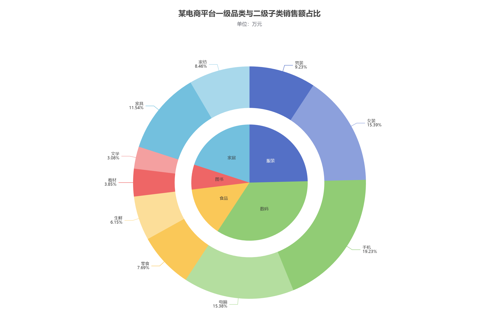

实验目的
理解多层级占比展示，并保证父子数据金额一致。
实验数据
| 一级品类 | 合计 / 万元 | 二级子类 / 万元 |
|---|---|---|
| 服装 | 320 | 男装 120，女装 200 |
| 数码 | 450 | 手机 250，电脑 200 |
| 食品 | 180 | 零食 100，生鲜 80 |
| 图书 | 90 | 教材 50，文学 40 |
| 家居 | 260 | 家具 150，家纺 110 |
实现要点
- 内层半径为 35%，以 10 号字在内部显示一级品类名称。
- 外层半径为 [45%, 70%]，外部标签以 10 号字分行显示子类名称和占总额百分比。
- 内外层总额均为 1300 万元，子类按父类顺序排列，使角度边界对应。
运行结果


完整配置
var option = {
title: {
text: '某电商平台一级品类与二级子类销售额占比',
subtext: '单位：万元',
left: 'center',
top: 20
},
tooltip: {
trigger: 'item',
formatter: '{a}<br/>{b}：{c} 万元（{d}%）'
},
series: [
{
name: '一级品类',
type: 'pie',
radius: '35%',
center: ['50%', '55%'],
label: {
show: true,
position: 'inside',
fontSize: 10,
formatter: '{b}'
},
labelLine: { show: false },
data: [
{ value: 320, name: '服装', itemStyle: { color: '#5470c6' } },
{ value: 450, name: '数码', itemStyle: { color: '#91cc75' } },
{ value: 180, name: '食品', itemStyle: { color: '#fac858' } },
{ value: 90, name: '图书', itemStyle: { color: '#ee6666' } },
{ value: 260, name: '家居', itemStyle: { color: '#73c0de' } }
]
},
{
name: '二级子类',
type: 'pie',
radius: ['45%', '70%'],
center: ['50%', '55%'],
label: {
show: true,
position: 'outside',
fontSize: 10,
formatter: '{b}\n{d}%'
},
labelLine: { show: true, length: 15, length2: 20 },
data: [
{ value: 120, name: '男装', itemStyle: { color: '#5470c6' } },
{ value: 200, name: '女装', itemStyle: { color: '#8ca0dc' } },
{ value: 250, name: '手机', itemStyle: { color: '#91cc75' } },
{ value: 200, name: '电脑', itemStyle: { color: '#b4de9f' } },
{ value: 100, name: '零食', itemStyle: { color: '#fac858' } },
{ value: 80, name: '生鲜', itemStyle: { color: '#fcde99' } },
{ value: 50, name: '教材', itemStyle: { color: '#ee6666' } },
{ value: 40, name: '文学', itemStyle: { color: '#f4a0a0' } },
{ value: 150, name: '家具', itemStyle: { color: '#73c0de' } },
{ value: 110, name: '家纺', itemStyle: { color: '#a8d8eb' } }
]
}
]
};
myChart.setOption(option);